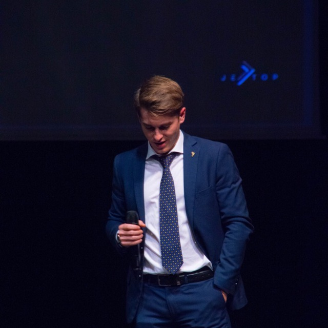

Hi, I'm Viorel
I'm a
Backend Developer & Creative Innovator
With strong experience in fullstack development and a special focus on cloud, I assist tech companies and startups in creating scalable and innovative projects. I am passionate about new technologies and frameworks, always on the lookout for solutions that can optimize business processes. My approach is based on creativity, flexibility, and a solid understanding of management processes.